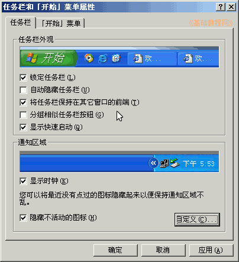

控制面板基础教程
作者：TeliuTe 来源：基础教程网
任务栏和开始菜单，可以设置任务栏和开始菜单的外观，下面我们来看一个练习；
1、任务栏和开始菜单
1）进入经典视图，点“任务栏和开始菜单”图标出来一个面板；
2）面板里包括任务栏和开始菜单两个标签选项；

2、设置选项
1）在任务栏选项里，可以设置自动隐藏、锁定任务栏、分组相似窗口；
2）下边可以设置显示时间，隐藏不活动图标后，任务栏托盘里会出来一个双箭头，点击展开折叠；
3）点“开始菜单”标签，可以选择“经典菜单”，也就是一排菜单；
4）点“自定义”按钮，可以设置开始菜单的细节方面；
5）再点“高级”，可以设置突出显示，最近打开文档，是否显示“我的文档”等链接菜单项；
本节学习了任务栏和开始菜单的基础知识，如果你成功地完成了练习，请继续学习下一课内容；
本教程由86团学校TeliuTe制作|著作权所有
基础教程网：http://teliute.org/
美丽的校园……
转载和引用本站内容，请保留版权信息和本站链接。